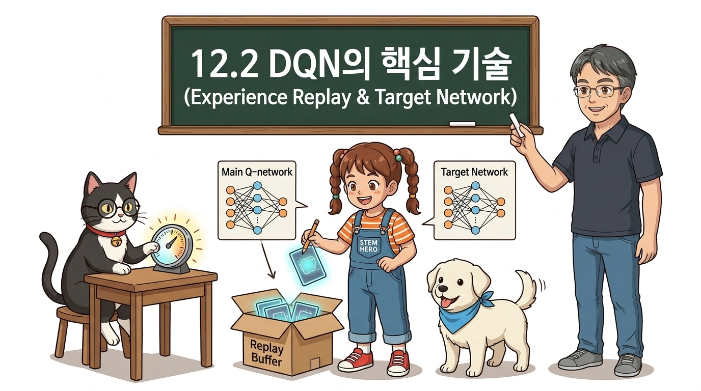
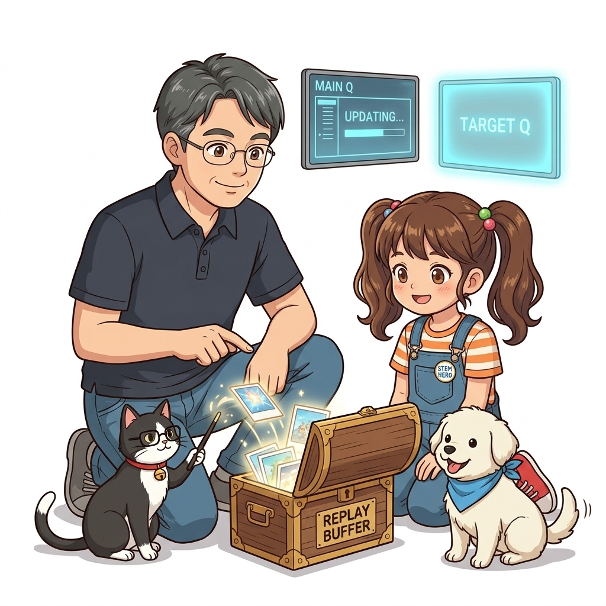
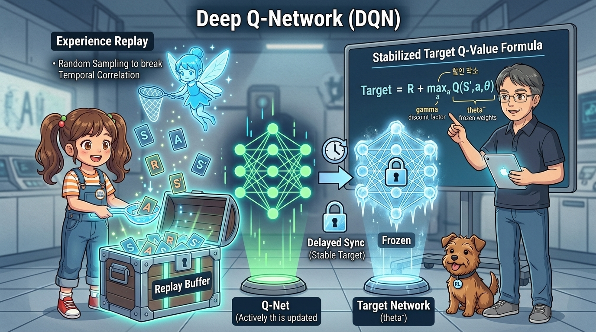
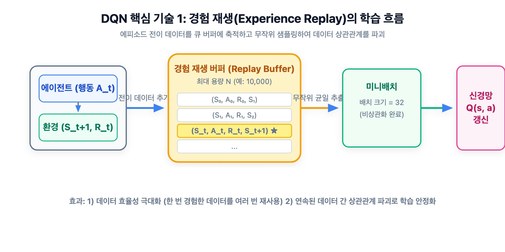
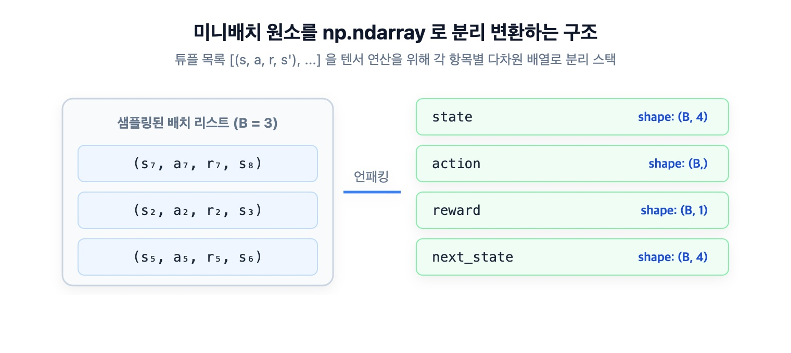
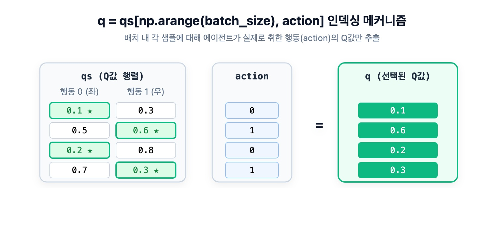
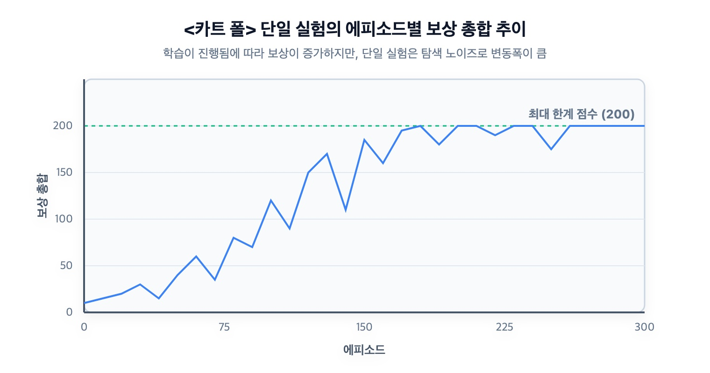
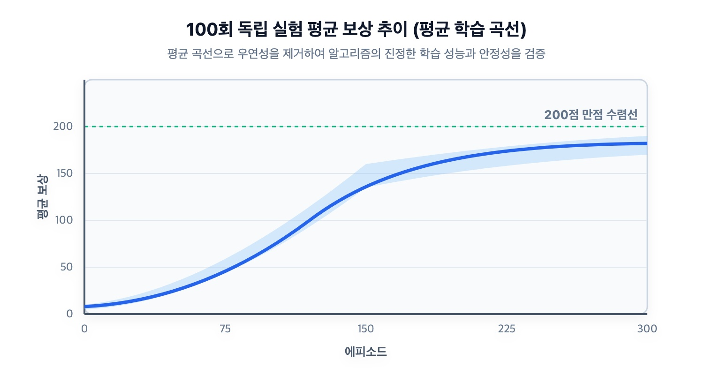

12.2 DQN의 2대 핵심 기술: 경험 재생과 목표 신경망


그림 12-2-1 과거 경험 카드 상자(Replay Buffer)에서 미니배치 샘플링을 진행하며 타깃 신경망의 학습 방향을 점검하는 지니와 도로시
그림 12-2-2 거대한 메모리 상자(Replay Buffer)에서 무작위로 경험 카드들을 국자로 건져 올려 데이터 간 시간적 상관관계를 분쇄하는 도로시와, 얼음 자물쇠로 고정된 목표 신경망(Target Network, θ-)을 통해 과녁을 고정하는 지니, 그리고 DQN 수렴 원리를 명쾌하게 해설하는 이호진 교수님신경망과 Q-러닝의 결합을 마침내 성공 궤도에 올려놓은 딥마인드(DeepMind)의 2대 비밀 병기, 경험 재생(Experience Replay)과 목표 신경망(Target Network)을 공부합니다. 딥 강화학습이 발산하지 않고 안정적으로 수렴하도록 만드는 수학적 배경과 ReplayBuffer, DQNAgent 클래스를 파이썬 코드로 밑바닥부터 구현해 봅시다!
12.2.1 심층 강화학습이 실패했던 이유와 ‘치명적인 삼총사’
2013년 딥마인드가 DQN을 발표하기 전까지, 인공신경망을 강화학습에 접목하려는 수많은 시도는 번번이 학습 발산과 실패로 끝났습니다.
강화학습의 거장 리처드 서튼(Richard Sutton) 교수는 이를 ‘치명적인 삼총사(The Deadly Triad)’라는 개념으로 설명했습니다:
- 함수 근사 (Function Approximation): 표현력이 너무 뛰어난 신경망을 사용할 때
- 부트스트랩 (Bootstrapping): 추정치로 추정치를 갱신할 때 (TD 학습)
- 오프-정책 (Off-Policy): 데이터 수집 정책과 학습 대상 정책이 다를 때
이 세 가지가 결합하면 신경망 가중치가 무한대로 발산하거나 0으로 붕괴하기 일쑤였습니다. 딥마인드는 바로 이 치명적인 딜레마를 해결하기 위해 경험 재생과 목표 신경망이라는 두 가지 천재적인 장치를 도입했습니다.
12.2.2 핵심 기술 1: 경험 재생 (Experience Replay)
1) 지도 학습과 강화학습의 데이터 차이
- 지도 학습 (MNIST 손글씨 등): 수만 장의 사진이 이미 데이터셋에 정적으로 모여 있고, 미니배치를 뽑을 때마다 무작위 셔플링(Random Shuffle)을 거칩니다. 데이터 간에 상관관계가 없는 독립 동일 분포(i.i.d: independent and identically distributed)가 성립합니다.
- 기존의 순차적 강화학습: 에이전트가 시간 t에 상태를 겪고 t+1에 즉시 학습하면, 시간적으로 바로 옆에 붙어 있는 경험 데이터 (St, At, Rt, St+1)와 (St+1, At+1, Rt+1, St+2) 사이에는 지나치게 강한 시간적 상관관계(Autocorrelation)가 존재합니다! 이로 인해 신경망이 특정 상태에 극단적으로 편향(과적합)되어 전체적인 균형을 잃고 무너집니다.
2) 경험 재생의 해결책: 거대한 시간 버퍼와 무작위 샘플링

그림 12-2-3 경험 재생을 이용한 학습 흐름. 에이전트의 1-스텝 경험을 버퍼에 차곡차곡 모은 뒤, 과거와 현재가 뒤섞인 무작위 미니배치를 추출하여 신경망을 학습시킵니다.- 상관관계 분쇄: 버퍼에서 무작위로 샘플링하면 100보 전에 겪었던 경험과 방금 전 겪은 경험이 한 배치에 뒤섞이므로 시간적 상관관계가 완전히 제거되어 지도 학습과 동일한 i.i.d 환경이 조성됩니다.
- 비약적인 데이터 효율성: 한 번 쓰고 버리던 경험 데이터를 버퍼에 간직하며 수십 번씩 재사용(Replay)하므로 적은 에피소드로도 고효율 학습이 가능합니다.
3) ReplayBuffer 클래스 구현
선입선출(FIFO) 방식으로 오래된 경험을 밀어내고 최신 경험을 유지하기 위해 collections.deque를 사용합니다:
from collections import deque
import random
import numpy as np
class ReplayBuffer:
def __init__(self, buffer_size, batch_size):
self.buffer = deque(maxlen=buffer_size) # 최대 크기 초과 시 오래된 데이터 자동 삭제
self.batch_size = batch_size
def add(self, state, action, reward, next_state, done):
data = (state, action, reward, next_state, done)
self.buffer.append(data)
def __len__(self):
return len(self.buffer)
def get_batch(self):
# ❶ 버퍼에서 batch_size(예: 32개)만큼 무작위 비복원 추출!
data = random.sample(self.buffer, self.batch_size)
# ❷ 넘파이 다차원 배열(배치 텐서)로 변환
state = np.stack([x[0] for x in data]) # 형상: (32, 4)
action = np.array([x[1] for x in data]) # 형상: (32,)
reward = np.array([x[2] for x in data]) # 형상: (32,)
next_state = np.stack([x[3] for x in data]) # 형상: (32, 4)
done = np.array([x[4] for x in data]).astype(np.int32) # 형상: (32,)
return state, action, reward, next_state, done

그림 12-2-4 리스트에 담긴 개별 경험 튜플들을np.stack을 통해 배치 행렬 형태로 패킹하는 과정
12.2.3 핵심 기술 2: 목표 신경망 (Target Network)
1) 움직이는 과녁 문제 (Moving Target Problem)
지도 학습에서는 사진의 정답 레이블(예: 숫자 7)이 학습 도중 절대로 바뀌지 않습니다.
하지만 Q-러닝의 TD 목표 수식을 다시 살펴봅시다:
T = Rt + γ maxa Q(St+1, a; θ)
- 가중치 θ를 갱신할 때마다, 정답이어야 할 목표값 T마저 동일한 가중치 θ에 의해 매 순간 함께 움직여 버립니다!
- 과녁판이 이리저리 도망치며 춤을 추는 상황에서 화살을 쏘는 것과 같아서, 학습이 수렴하지 못하고 소용돌이치며 튕겨져 나갑니다.
2) 목표 신경망의 해결책: 과녁을 얼려두는 복제본 (θ-)
DQN은 구조가 똑같은 신경망을 두 벌 운용합니다:
- 행동 신경망 (Main Q-Net, 가중치 θ): 매 스텝마다 오차역전파로 실시간 학습을 진행하는 주력 네트워크입니다.
- 목표 신경망 (Target Q-Net, 가중치 θ-): 오직 정답 레이블(TD 타깃)을 계산하는 데만 쓰이며, 평상시에는 가중치를 단단히 얼려둡니다(Freeze).
T = Rt + γ maxa Q(St+1, a; θ-) (식 12.1: 목표 신경망 기반 TD 타깃)
L = (1 / B) · ∑ [T - Q(St, At; θ)]2 (식 12.2: DQN의 MSE 손실 함수)
그리고 일정한 주기(예: 20 에피소드마다)가 되었을 때만, 메인 신경망의 가중치를 목표 신경망으로 복사(copy.deepcopy)하여 과녁판의 위치를 한 번씩 동기화해 줍니다.
이로써 정답 레이블이 안정적으로 고정되어 신경망이 차분하게 수렴할 수 있게 됩니다!
12.2.4 DQN 에이전트 클래스: DQNAgent
두 핵심 기술을 모두 탑재한 완성형 DQNAgent를 작성해 봅시다.
import copy
import numpy as np
from dezero import Model, optimizers
import dezero.functions as F
import dezero.layers as L
# 1. CartPole용 3층 MLP 신경망 (입력: 4차원 상태 -> 은닉 128 -> 은닉 128 -> 출력: 2개 행동 Q값)
class QNet(Model):
def __init__(self, action_size):
super().__init__()
self.l1 = L.Linear(128)
self.l2 = L.Linear(128)
self.l3 = L.Linear(action_size)
def forward(self, x):
x = F.relu(self.l1(x))
x = F.relu(self.l2(x))
x = self.l3(x)
return x
# 2. DQN 에이전트
class DQNAgent:
def __init__(self):
self.gamma = 0.98 # 할인율
self.lr = 0.0005 # 학습률
self.epsilon = 0.1 # 탐험 확률
self.buffer_size = 10000 # 경험 버퍼 용량
self.batch_size = 32 # 미니배치 크기
self.action_size = 2 # 행동 가짓수 (좌, 우)
self.replay_buffer = ReplayBuffer(self.buffer_size, self.batch_size)
self.qnet = QNet(self.action_size) # ❶ 메인 행동 신경망 (학습 대상)
self.qnet_target = QNet(self.action_size) # ❷ 타깃 신경망 (얼려둔 과녁)
self.optimizer = optimizers.Adam(self.lr)
self.optimizer.setup(self.qnet) # 옵티마이저에는 메인 qnet만 등록!
def sync_qnet(self):
# ❸ 주기적 동기화: 메인 망의 가중치를 타깃 망으로 완전 복제(deepcopy)
self.qnet_target = copy.deepcopy(self.qnet)
def get_action(self, state):
if np.random.rand() < self.epsilon:
return np.random.choice(self.action_size)
else:
state = state[np.newaxis, :] # 배치 차원 추가: (1, 4)
qs = self.qnet(state)
return qs.data.argmax()
def update(self, state, action, reward, next_state, done):
# ❹ 경험 추가
self.replay_buffer.add(state, action, reward, next_state, done)
if len(self.replay_buffer) < self.batch_size:
return # 최소 배치 크기(32개)가 쌓일 때까지 대기
# ❺ 무작위 미니배치 샘플링 (i.i.d 충족)
state, action, reward, next_state, done = self.replay_buffer.get_batch()
# ❻ 현재 상태에서의 예측 Q값 (32개 데이터에서 에이전트가 취했던 행동만 인덱싱)
qs = self.qnet(state) # 형상: (32, 2)
q = qs[np.arange(self.batch_size), action] # 형상: (32,)
# ❼ 타깃 신경망으로 안정된 다음 상태 Q 최댓값 계산
next_qs = self.qnet_target(next_state)
next_q = next_qs.max(axis=1)
next_q.unchain() # 기울기 누수 차단!
# ❽ 종단 마스킹과 MSE 손실 계산
target = reward + (1 - done) * self.gamma * next_q
loss = F.mean_squared_error(q, target)
# ❾ 메인 신경망 가중치 갱신
self.qnet.cleargrads()
loss.backward()
self.optimizer.update()

그림 12-2-5qs[np.arange(batch_size), action] 인덱싱 동작. 32행 2열의 예측 Q 행렬에서 각 샘플이 실제로 취했던 행동 번호의 Q값만 한 줄로 쏙 뽑아냅니다.
12.2.5 CartPole 환경 훈련 및 성능 검증
이제 CartPole-v0 환경에서 DQN 에이전트를 300 에피소드 동안 학습시켜 봅시다!
import gym
env = gym.make('CartPole-v0', render_mode='rgb_array')
agent = DQNAgent()
episodes = 300
sync_interval = 20 # 20번째 에피소드마다 타깃 신경망 동기화!
reward_history = []
for episode in range(episodes):
state, info = env.reset()
done = False
total_reward = 0
while not done:
action = agent.get_action(state)
next_state, reward, terminated, truncated, info = env.step(action)
done = terminated or truncated
agent.update(state, action, reward, next_state, done)
state = next_state
total_reward += reward
# 주기적으로 타깃 신경망 동기화
if episode % sync_interval == 0:
agent.sync_qnet()
reward_history.append(total_reward)
if episode % 50 == 0:
print(f"에피소드 {episode:03d} | 총 보상(버틴 스텝): {total_reward}")

그림 12-2-6 1회 실험에서의 에피소드별 보상 추이. 초기 10~20스텝에서 시작하여 100~200스텝으로 눈부시게 향상됩니다.
그림 12-2-7 100회 독립 실험을 수행하여 통계적으로 평균한 학습 곡선. 50에피소드 전후로 급격한 학습 곡선을 그리며 높은 점수에 안정적으로 안착합니다.학습 완료된 에이전트의 테스트 주행
탐험 확률을 0으로 끄고(agent.epsilon = 0) 순수 탐욕 정책으로 렌더링 주행을 시켜보면:
agent.epsilon = 0 # 100% 최적 탐욕 행동
state, info = env.reset()
done = False
total_reward = 0
while not done:
action = agent.get_action(state)
next_state, reward, terminated, truncated, info = env.step(action)
done = terminated or truncated
state = next_state
total_reward += reward
print("최종 달성 보상:", total_reward) # 200 만점 달성!
랜덤 에이전트가 10~20스텝 만에 쓰러뜨리던 막대를, DQN 에이전트는 미동도 없이 꼿꼿하게 세운 채 200스텝 만점을 완벽하게 달성합니다!
다음 12.3절에서는 이 DQN이 단순한 역학 제어를 넘어, 컴퓨터 화면 픽셀만을 보고 고전 비디오게임을 클리어했던 딥마인드의 아타리(Atari) 혁명의 비밀을 들여다봅시다!